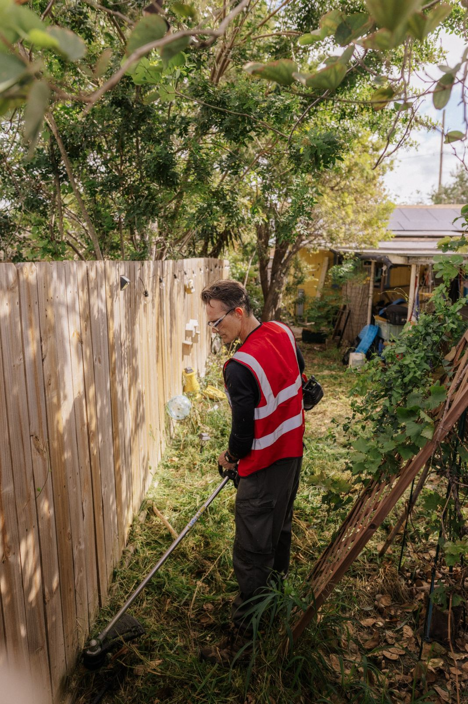
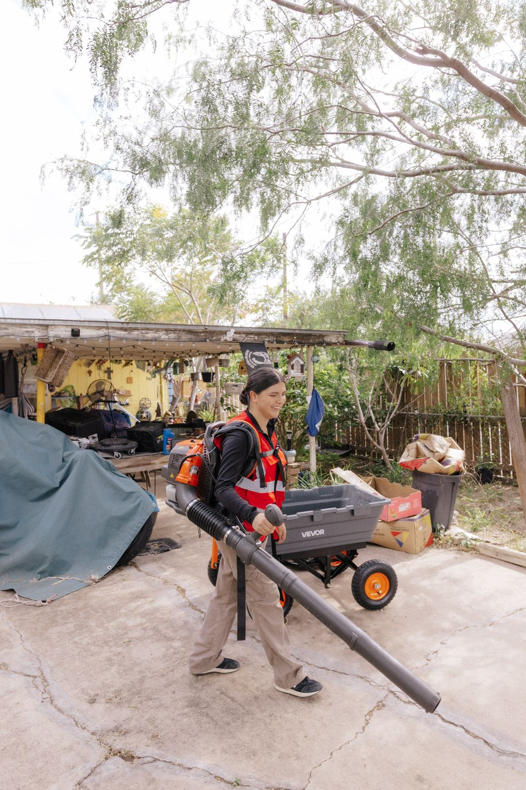
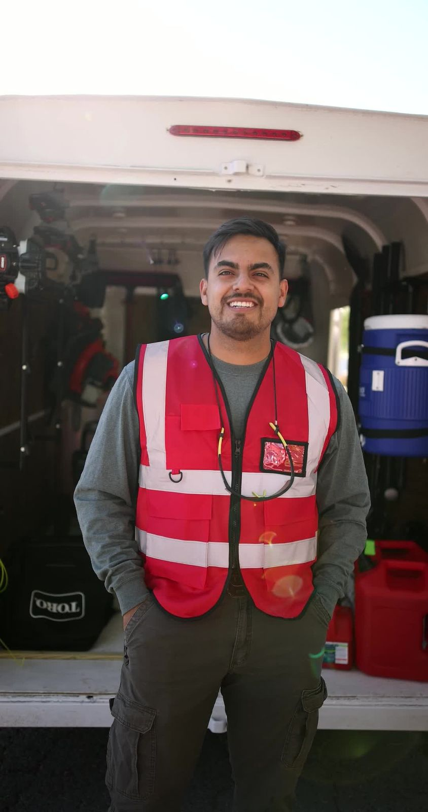
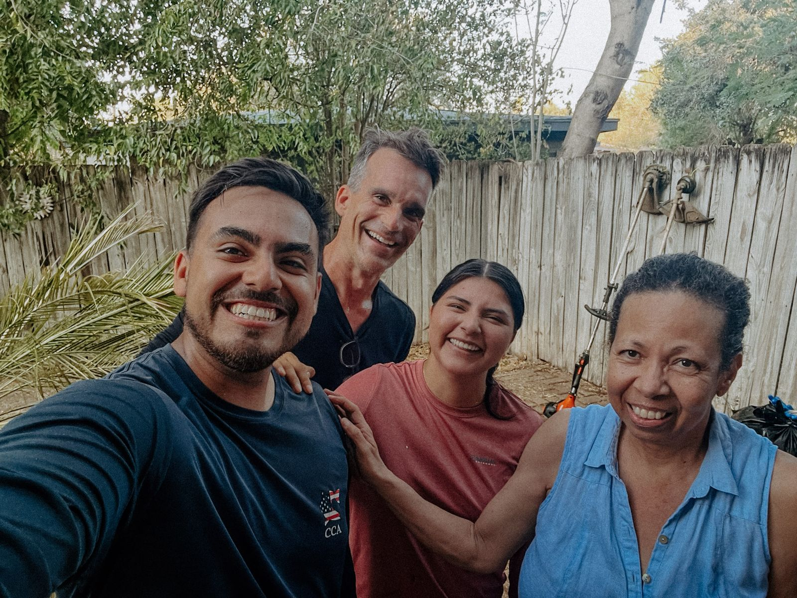
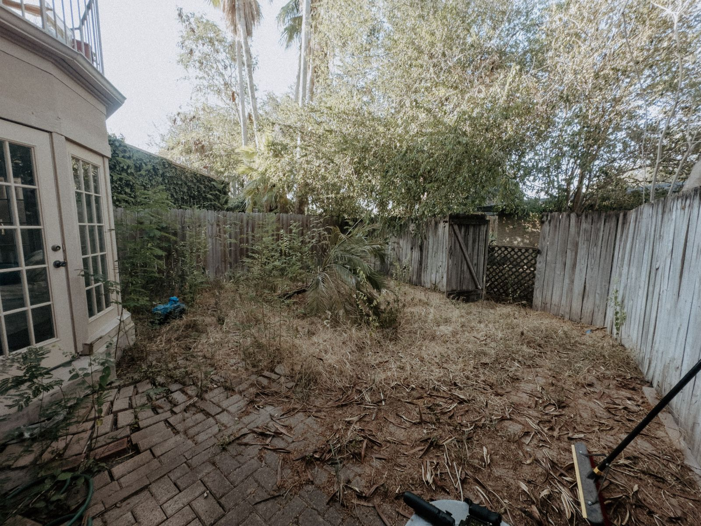
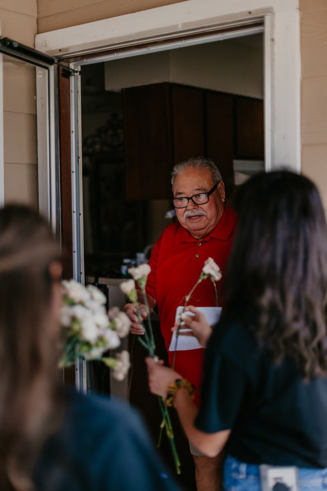
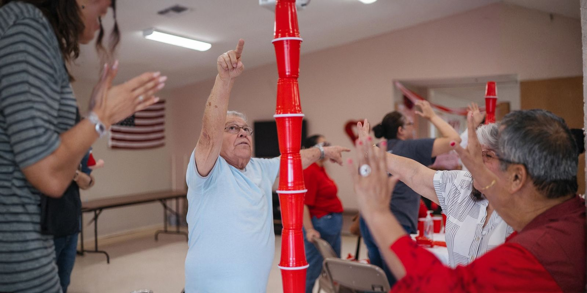
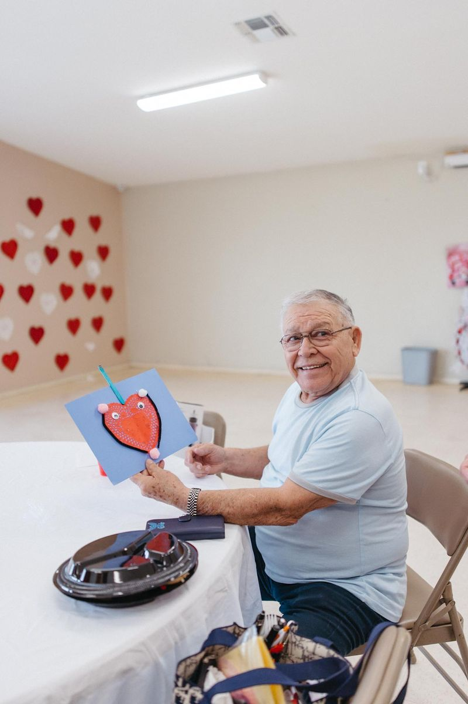

79%
About 79% of Cameron County households headed by someone 65 or older own their home. The upkeep falls on them.
Source: Census Bureau, ACS 2020 to 2024, table S0103.
A safe home, a steady friend and a place to belong. One neighbor, one heart, one home at a time.

Crews clear yards, trim trees and haul away junk for low-income seniors in Harlingen. Every project is ministry in motion, restoring dignity and hope.
Harlingen, 2026






38
Yards and homes restored since we started in August 2025.
Sample figures, to be replaced with program records.
Restore Active
Junk removal, yard clean-ups and outdoor maintenance.
Renew Planned
Painting, porch repair, ramps and railings.
Rebuild Planned
Roofing, siding, HVAC and plumbing.
Renew and Rebuild open as skilled volunteers, materials and funding allow.

79%
Source: Census Bureau, ACS 2020 to 2024, table S0103.
26.5%
Source: Census Bureau, ACS 2020 to 2024, table S1810.

Each volunteer adopts one senior neighbor and keeps in touch every month. The goal is trust, hope and companionship.
Harlingen, by letter, phone and in person

A match
A volunteer is matched with a senior neighbor.
Contact every month
Letters, calls, coffee meetups and care packages.
Support from us
We provide guidance, prayer and follow-up.
1 in 4
Source: Census Bureau, ACS 2020 to 2024, table B09020.
Sample figures, to be replaced with program records.
15 a day
The U.S. Surgeon General says lacking social connection affects the risk of early death about as much as smoking up to 15 cigarettes a day.
Source: Our Epidemic of Loneliness and Isolation, U.S. Surgeon General's advisory, 2023. A national finding.
Volunteers bring crafts, music, prayer and conversation to adult day cares, nursing homes and hospice centers. Our elders are seen, loved and never forgotten.
Valentine's fellowship, February 14, 2026



Through November 2026
Sample figures, to be replaced with program records.
Volunteers sort donated goods and run the booth at local markets. Every purchase funds our programs.
Help at the boothFrom our volunteer sign-up page, checked November 20, 2026. See all volunteer dates